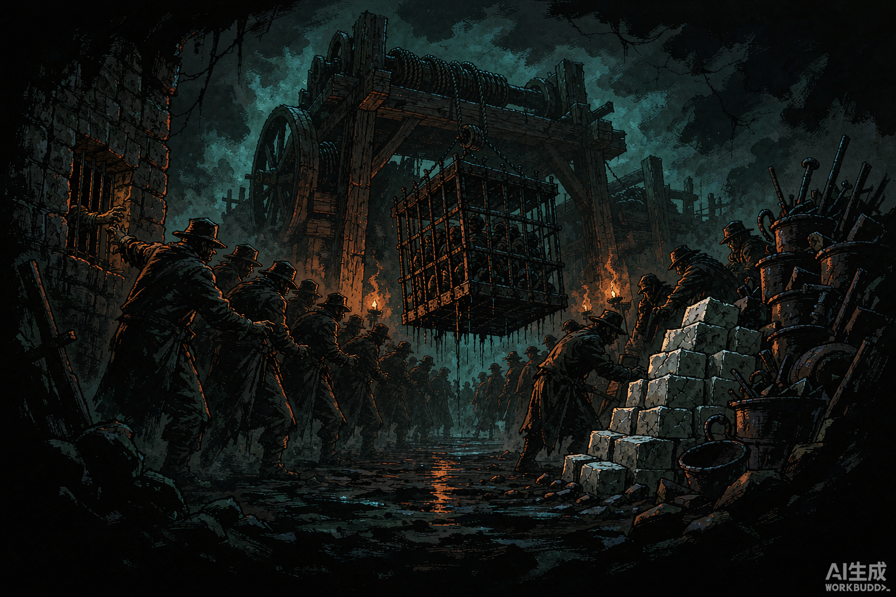
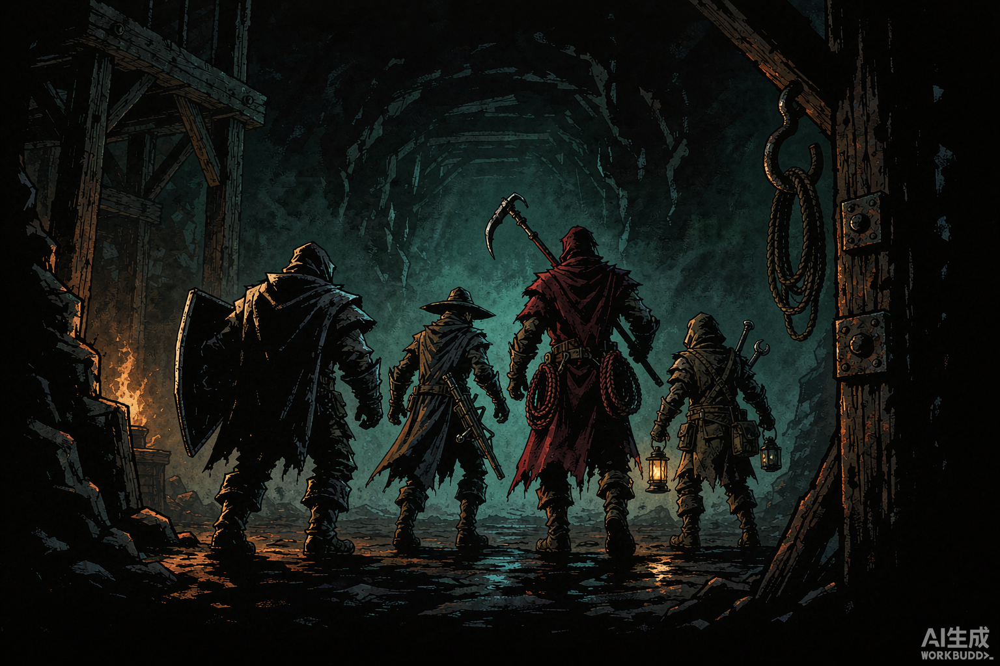
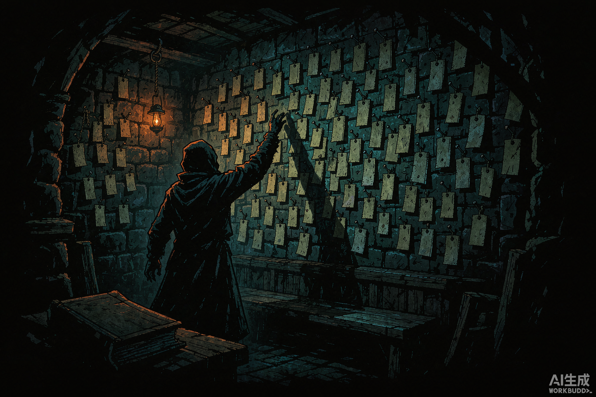
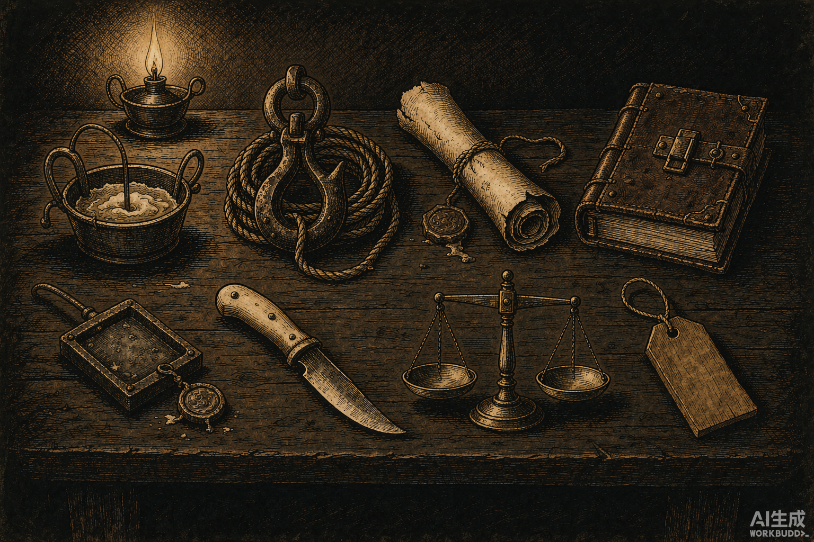
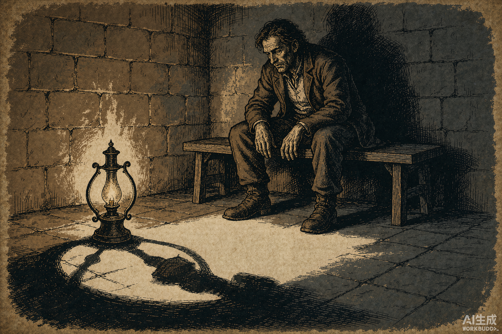

An Atlas of the Hollow
空腔·图志
十二幅图，记一座围着洞长出来的城，和它下面那件事。
十二幅图，记一座围着洞长出来的城，和它下面那件事。
这本册子不解释这个世界，只记录它的样子。
图按从上到下排：先是地上的城，然后是墙外的人，然后是下去的队，最后是洞里的那几层。每一幅底下有一小段注记。注记不是说明——图上已经有的东西不必再写，写的是图上没有的。
十二幅图里，前八幅是一种画法，附录四幅是另一种。原因写在附录开头，简单说：前八幅是让人站进去看的，后四幅是让人凑近了认的。这两件事不能同时做。
PLATE 01
城不是建在洞旁边的，是围着洞长出来的。最早只有井口那几间棚子，后来才有外圈的房子。所以从高处往下看，越往里越破——不是因为里面住的人穷，是因为里面的东西一直在被吃掉。
官府拆过三次。每拆一次，棚子往外挪一圈，第二年又长回来。第三次之后就不再拆了。
洞没有护栏。掉下去的人不立案，只入账。

PLATE 02井票、吊笼、账房、盐垛。四样东西，构成这座城全部的产业。
吊笼一天上来两次。上来的时候没人说话——所有人都在数笼子里还剩几个。
账房的窗口很小，只容一只手伸进去。这么设计不是为了防盗，是因为递状纸的人不该看见里面坐着谁。
 PLATE 03
PLATE 03
棚屋是用城里的废料搭的。城墙上有窗，窗里有灯；棚区一盏灯也没有——不是点不起，是他们不再需要被看见了。
那件外套的主人还住在这儿。他每天把靴子摆在门口，位置很正，鞋尖朝外。这件事他做了十一年。
墙上那些高窗，从外面看是暖的。住在里面的人不知道这一点。

PLATE 04一个班四个岗位：壁障走最前，提灯的走第二，剩下两个跟在后头。
没有一个人回头看。这是规矩，不是勇气——回头的人会开始算自己走了多远。
他们背的东西比看上去重。炭、绳、钩、油、账。武器排在最后一件，因为大多数时候用不上，用上的时候也来不及。

PLATE 05死在下面的人带不回来。井太深，尸太重，抬一具上来要三个人两天的炭。
所以只带回一块牌子。挂在灶房后墙上，和他最后吃饭的那张桌子只隔一堵墙。
墙早就挂满了。新的挂在旧的上面，一层压一层。最上面那一排要踩着凳子才够得着——可凳子已经不够高了。
 PLATE 06
PLATE 06
往下三十丈，你会见到一条街。
铺石、台阶、店铺墙上挂货的铁架、招牌的框，全都在。只是这条街是折的——地基在某一刻一起往下塌，路面裂成一段一段，各落各的。
天花板压得很低。低到你会明白一件事：上面那座城不是盖在它上面，是压在它上面。
 PLATE 07
PLATE 07
这一层原来是一个镇。有井架、有绞盘、有推车、有镇公所。
收进来的时候没有塌，是整块挪下来的——房子还是房子，路还是路，只是头顶多了一层石头。
最难受的是那几根绳。它们还挂在原来的滑轮上，绷得很紧，像是下面还吊着什么。下面什么都没有。
 PLATE 08
PLATE 08
这座城里最贵的东西不是盐，是火。
一支炭只能做一件事：让你被看见。所以每个下井的人每天都要算——今天这点火，是拿来照路，还是拿来把东西煮熟。两件都是要紧事，但一日只有一个火。
灶房的火不断，因为这里必须被看见：谁吃了什么、几时回来、账目对不对，都要有光才作数。
画面右边那半个屋子是黑的。那不是画法，那是这里本来的样子。
下面四幅用的是另一种画法：旧书铜版画，褐纸为底，线描为骨。
它不是用来感受的，是用来辨认的。这一册里所有“这东西到底长什么样”的问题，都在这里回答——因为铜版画必须把每一处都画清楚，而前面那八幅故意不画清楚的，恰恰是大部分地方。
还有一层是不得不：第九幅只能这么画。那一层的特征是“白得看不见”，而版画的底本来就是纸，留白就是“无”。换成黑底的画法，它会被画成一片雪原——之前试过，确实成了雪原。
 PLATE 09
PLATE 09
第三层的地面是骨头变的。踩上去会响，但不是脆响，是那种踩在干土上的闷响。
这一层最反常的地方是：它不黑。四面八方都是白的，你举着灯站在那儿，灯只照亮自己脚下一圈。
你什么都看得见，又什么都看不见。前面所有层教给你的那套——点火、看远、记住来路——在这里全部作废。
 PLATE 10
PLATE 10
他们不是六个种族，是同一种人的六种活法。
岸民是普通人，只是常年不见太阳。石生宽得下不了井，却是全城唯一会做下井家伙的人。长账族活得久，皱纹比同龄人少，眼睛却老。嗅觉族靠鼻子吃饭。细民钻缝。
空者不在这张图里。他们已经不在任何一张图里了。

PLATE 11脂灯、绞盘钩、下井状、账册、封条铁牌、剖刀、木牌、天平。
这八件东西正好构成一个人的一生：灯照路，钩吊人，状纸换井票，账册记他欠多少，铁牌封他下的那口井，刀是工具，木牌是终点，天平用来称他值多少。
没有一件是武器。

PLATE 12空蚀不是病，是账被一点一点收走。
先忘事，再尝不出味道，最后变淡。变淡不是比喻——他真的开始不挡光了。灯在他身后，地上没有他的影子。
他不疼。这是最坏的地方。